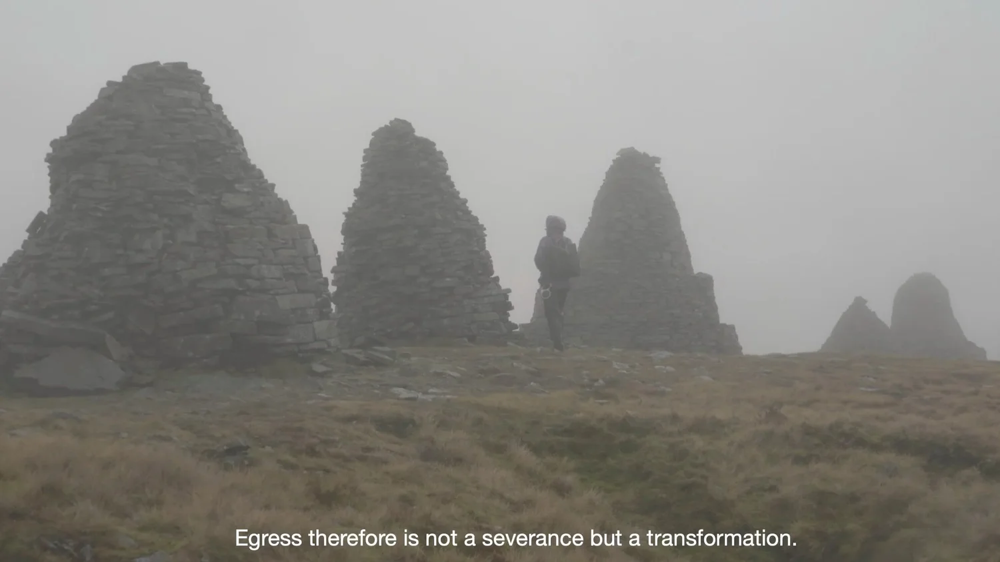
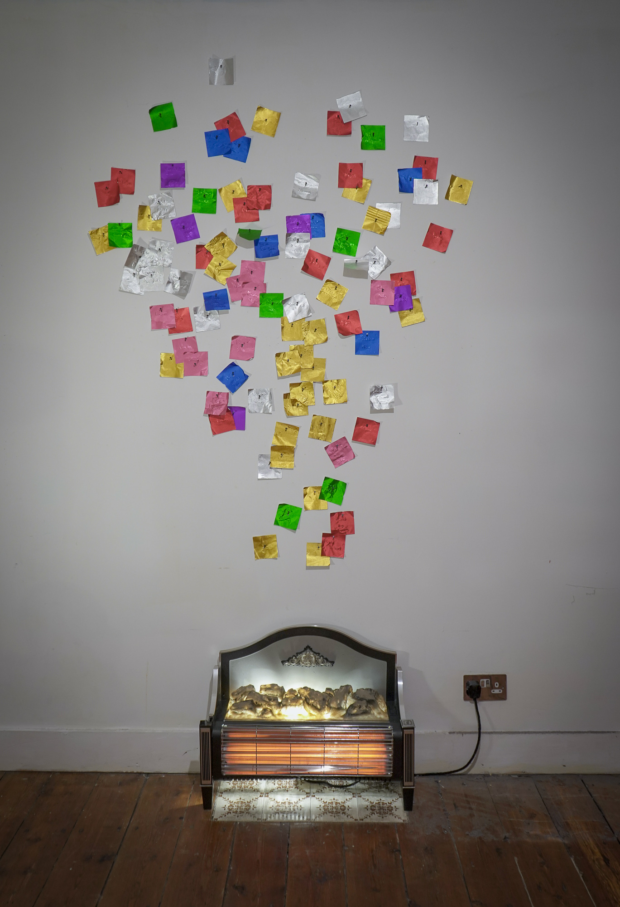

Antecedent Wayfinder (2024)

Spectrum and Decay (2024)

Fixing a Hole (2022)

One Day as I Was Driving Home (2021)

Goodbyes and So Longs (2020)

The Longest Journey Is the Journey Inward (2020)

How I Got Lost (2014)

Life Is Long If You Know How to Live It (2013)

Olympic Sized (2013)

Look Upon My Works, Ye Mighty (2012)